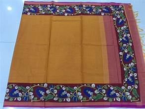

🎨✨ Art and Handicrafts of Andhra Pradesh – A Kaleidoscope of Heritage and Elegance 🖌️🧵
🖼️ Traditional Art Forms – Echoes of Mythology and Culture

An ancient hand-painted and block-printed art form where natural dyes are used on fabric.
Two types:
Srikalahasti Style – Freehand drawing with intricate mythological depictions.
Machilipatnam Style – Block-printed motifs with floral and animal designs.
Theme: Depicts stories from Ramayana, Mahabharata, and Puranas in vivid detail.
Cheriyal Scroll Painting 📜
A vibrant narrative scroll painting tradition, originating from Telangana but flourishing in Andhra.
Theme: Mythological tales, folklore, and village life, painted in vivid hues on cloth or canvas.

Tholu Bommalata (Leather Puppetry Art) 🎎
Exquisite shadow puppetry art where colored leather sheets are intricately carved and painted.
Depicts scenes from Ramayana and Mahabharata, illuminated behind a white cloth screen.
🪡 Handicrafts – Marvels of Craftsmanship
Etikoppaka Wooden Toys 🎎
Handmade wooden toys crafted using lacquer coating and natural dyes.
Known for their vivid colors, smooth finish, and intricate detailing.
Theme: Depicts animals, mythological characters, and traditional objects.
Kondapalli Toys 🎨
Iconic wooden toys carved from soft Poniki wood and painted with bright natural colors.
Popular figures include Dasavataram (ten incarnations of Lord Vishnu), animals, and village scenes.
USP: Eco-friendly, lightweight, and known for their vibrant charm.
Budithi Brassware ⚱️
Stunning brass and metal artifacts handcrafted in the Budithi village of Srikakulam district.
Designs: Geometric patterns, traditional motifs, and functional household items like lamps and utensils.

Pembarthi Metal Craft 🛕
Elegant brass sheet metalwork known for its delicate carvings and ornamental motifs.
Usage: Decorates temple doors, chariots, and walls with mythological themes.
Dharmavaram Silk Sarees 🧵
Luxurious silk sarees renowned for their rich texture, vibrant colors, and intricate zari work.
USP: Broad gold borders, elaborate pallus, and traditional motifs inspired by nature and mythology.
Harikatha –
A unique form of storytelling through music, narration, and drama, blending mythological stories with moral teachings.
Performed by Haridasas who engage the audience with spiritual discourses and melodic interludes.
🪢 Textile and Weaving Heritage – Threads of Elegance

Pochampally Ikat 🧶
A world-renowned handwoven Ikat fabric where geometric patterns are dyed before weaving.
Known for its intricate designs and vibrant colors, Pochampally sarees and fabrics are a symbol of sophistication.
Mangalgiri Cotton 🧵
Fine-quality handloom cotton fabric with delicate zari borders and intricate patterns.
Popular for sarees, dupattas, and dress materials, combining simplicity and elegance.


Uppada Jamdani Sarees 🧣
Exquisite sarees known for their lightweight fabric, intricate Jamdani weaving, and elegant motifs.
Specialty: Woven using pure silk and cotton, often featuring floral and geometric designs
Venkatagiri Sarees 🌸
Renowned for their soft texture, intricate motifs, and shimmering zari work.
Lightweight and elegant, these sarees are perfect for festive occasions.

🛕 Stone and Wood Carving – Precision and Perfection
Lepakshi Stone Carving ⛏️
Artistic stone carvings that showcase intricate sculptures, temple architecture, and divine motifs.
Prominent in Lepakshi and Tirupati, these carvings adorn temple pillars and walls.
Durgi Stone Craft 🗿
Unique stone carvings from Durgi village, known for their sculptural finesse and mythological depictions.
Commonly used in temple construction and ornamentation
🸠Musical Instrument Craft – Rhythms of Tradition

Veena Making 🎵
Andhra Pradesh is known for producing high-quality Veenas, a classical string instrument associated with Carnatic music.
Crafted with intricate designs and superior acoustics, the Veena holds cultural and spiritual significance.
Mridangam and Tambura 🪘
Crafted with precision, these instruments are essential to Carnatic and folk music traditions.
Made with natural materials and tuned meticulously for melodious performances

🧺 Weaving and Basketry – Heritage of Utility and Beauty
Addanki Basketry 🧺
Beautiful handwoven baskets crafted from natural fibers like bamboo and cane.
Known for their durability and intricate weaving patterns.
Palmyra Leaf Crafts 🍂
Eco-friendly crafts made using dried palm leaves, creating decorative items, fans, and utility baskets.

🕊️ Eco-Friendly and Sustainable Crafts

Banana Fiber Crafts 🍌
Unique crafts made using banana fiber, creating eco-friendly home decor, jewelry, and baskets.
Jute and Coir Products 🌱
Handcrafted eco-friendly items like bags, mats, and wall hangings made from jute and coir.